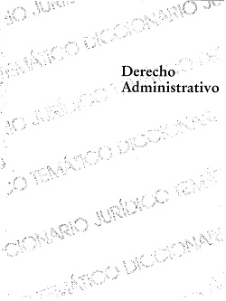

DERECHO ADMINISTRATIVO
Dentro de los variados e importantes diccionarios de derecho existentes hoy día, editorial Harla, siempre atenta a las necesídades del estudiantado, ofrece una nueva alternativa. En efecto, se trata de un diccionario con características diferentes y asequibles para el estudiante de derecho.
Descargar (Gratis por 1 mes)